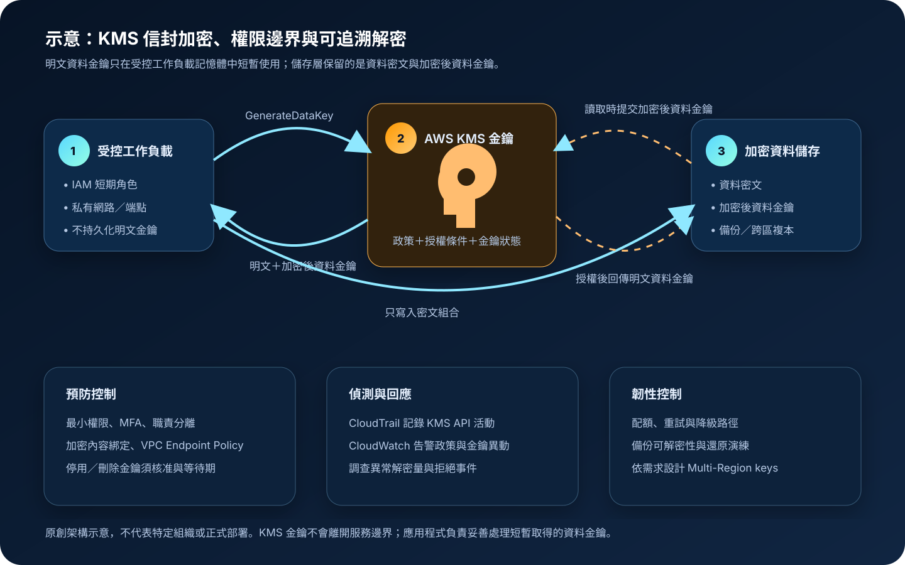

AWS KMS：金鑰管理與信封加密
AWS Key Management Service（AWS KMS）用於建立與控制加密金鑰，並提供受管的加密操作。它能與多項 AWS 服務整合，協助保護靜態資料；但加密成效仍取決於金鑰政策、IAM、應用程式設計、稽核、備份可解密性與生命週期治理。
作者：Dr. William｜查閱與發布：2026-09-08
服務定位
AWS KMS 是受管的加密金鑰服務。客戶可使用 AWS 受管金鑰、AWS 擁有的金鑰或客戶自管金鑰，依控制需求管理權限、啟用狀態、輪替與刪除。KMS 金鑰的金鑰資料受硬體安全模組保護，未經加密的金鑰資料不會離開 KMS；應用程式通常透過 AWS 服務整合或 KMS API 執行加密、解密、簽章及資料金鑰操作。
KMS 解決的是金鑰與加密操作的管理問題，不等於完整資料安全方案。資料分類、傳輸加密、身分驗證、網路隔離、應用授權、機密管理、備份、事故應變與法規判定仍須由客戶設計。需要單租戶硬體設備層級控制或自管加密硬體模組時，應另外評估 AWS CloudHSM 或外部金鑰存放區等方案及其可用性責任。
核心概念
KMS 金鑰與授權
- KMS key：代表邏輯金鑰及其後設資料、權限與金鑰資料。對稱加密金鑰常用於 AWS 服務整合與信封加密。
- Key Policy：每把 KMS 金鑰的主要授權機制；必須正確設計，IAM Allow 並非在所有情況下都能單獨授予使用權。
- IAM Policy 與 Grants：IAM Policy 可在金鑰政策允許下委派權限；Grant 適合讓 AWS 服務或特定主體取得有限、可撤銷的使用權。
- 加密內容：Encryption Context 是非機密的鍵值資料，可綁定解密條件並進入 CloudTrail，不能放入敏感內容。
信封加密與生命週期
- 信封加密：資料金鑰加密資料，KMS 金鑰再加密資料金鑰；儲存時保留資料密文與加密後資料金鑰。
- 輪替：依金鑰類型與設定採自動或手動輪替；輪替不會自動重新加密既有資料，舊金鑰資料仍用於解密既有密文。
- 別名與 ARN：別名便於人員辨識，權限與稽核應避免把可變別名誤當唯一不變識別。
- Multi-Region keys：相關金鑰可在不同區域具有相同金鑰 ID 與金鑰資料，但政策、別名、啟用狀態及 Grants 等屬性仍分區域管理。
適合與不適合的使用情境
適合
- 為 S3、EBS、RDS、DynamoDB、Secrets Manager、CloudTrail 等支援服務提供客戶可控的靜態資料加密。
- 以信封加密保護大型資料，避免把大量內容直接交由 KMS 處理。
- 需要集中管理金鑰權限、停用、輪替、刪除等待期與 CloudTrail 稽核的多帳號環境。
- 需要數位簽章、訊息驗證碼或非對稱加密，且演算法與配額符合 KMS 支援範圍。
不適合或不能單獨完成
- 高吞吐大型資料不應逐筆直接呼叫 KMS 加密；應採資料金鑰與信封加密，並評估 SDK、快取與配額。
- 需要自行接觸或匯出未加密主金鑰資料時，標準 KMS 金鑰不符合此需求。
- 加密不能替代資料庫或應用程式的列級授權、輸入驗證、網路控制與資料外洩偵測。
- 跨區服務復原不能只建立 Multi-Region key；資料複寫、金鑰政策、IAM、依賴服務、DNS 與演練都必須同步完成。
示意故事案例：私有文件平台的信封加密
以下為架構示意，不代表特定組織或正式部署。一個企業文件平台把正式工作負載放在私有子網路，運算角色只取得指定 KMS 金鑰與儲存路徑的必要權限。上傳文件時，應用程式呼叫 GenerateDataKey，使用短暫取得的明文資料金鑰在記憶體內加密文件，隨即清除不再需要的明文資料，把文件密文與加密後資料金鑰一起寫入私有 S3 Bucket。讀取時，應用程式提交加密後資料金鑰與相同 Encryption Context，KMS 在 Key Policy、IAM 條件、金鑰狀態與授權均通過後回傳資料金鑰。
管理人員使用聯合登入、MFA 與短期角色，金鑰管理者不能讀取文件，應用角色不能修改金鑰政策。CloudTrail 記錄 KMS API 活動，CloudWatch 對停用金鑰、排程刪除、政策異動、異常拒絕與解密量告警。文件密文與加密後資料金鑰依 RPO/RTO 備份或跨區複寫；復原演練同時驗證目的區域的金鑰、IAM、應用設定與資料可解密性。

建置與運作流程
- 分類資料與需求：辨識保護資料、法規、金鑰所有權、區域、演算法、保留期限、RTO/RPO、吞吐及稽核需求。
- 選擇金鑰類型：比較 AWS 擁有、AWS 受管及客戶自管金鑰；只有在控制或隔離需求成立時增加自管複雜度。
- 建立職責分離：拆分金鑰管理、金鑰使用、稽核與資料存取角色；人員採 MFA 與短期角色，禁止共用長期身分。
- 設計 Key Policy：以最小權限限定主體、動作、資源、帳號、服務、來源與 Encryption Context；先測試允許及拒絕路徑再上線。
- 建立網路邊界：工作負載置於適當私有子網路，依需求使用 KMS VPC Endpoint，收斂 Security Group、端點政策、DNS 與出口規則。
- 採用信封加密：大型資料使用資料金鑰；明文資料金鑰僅在受控記憶體短暫存在，不寫入日誌、錯誤訊息或儲存層。
- 管理機密：應用機密存入 Secrets Manager 或 Parameter Store，並使用專用權限與適用 KMS 金鑰；Encryption Context、別名與標籤不得承載機密。
- 啟用稽核與告警：以 CloudTrail 記錄 KMS 活動，CloudWatch 監控政策、停用、刪除、匯入材料到期、拒絕與異常呼叫量。
- 規劃生命週期：定義建立、輪替、停用、重新加密、撤銷 Grant、刪除等待期與緊急復原核准流程。
- 驗證韌性：量測 KMS 配額與延遲，實作指數退避；跨區情境同步驗證資料、金鑰、政策、應用依賴與監控。
- 持續審查：定期分析未使用權限、跨帳號授權、金鑰使用量、成本、備份可解密性及事故演練結果。
成本與可用性考量
KMS 費用通常包含客戶自管金鑰的月費與 API 請求費；金鑰輪替、Multi-Region key 的各區域複本、CloudHSM 或外部金鑰存放區相關資源，以及整合服務的儲存、日誌與資料傳輸可能另行計費。AWS 受管金鑰與免費額度的適用方式須依查閱日定價及帳單項目確認。信封加密可減少直接加密大量資料的 KMS 呼叫，但應依實際請求型態估算成本。
KMS 為區域性服務。服務整合、應用程式與資料所在區域應配合設計；Multi-Region keys 提供跨區域可互通的相關金鑰，不會自動複寫資料，也不會自動同步所有管理屬性。單區域系統通常不應只為形式採用多區域金鑰；真正需要主動—主動、全域資料或跨區低延遲解密時，才應承擔額外政策與營運複雜度。
加密與解密呼叫受 KMS 配額、權限、金鑰狀態、網路及相依服務影響。應量測尖峰、申請必要配額、加入重試與背壓，避免 KMS 短暫錯誤擴散成整個應用程式故障。備份存在不代表可還原；金鑰遭停用、排程刪除、政策遺失或目的區域未配置，都可能使備份無法解密。
AWS KMS 特有資安風險與控制
- Key Policy 過寬：萬用主體、廣泛跨帳號授權或缺少條件會放大解密範圍。限定主體與用途，搭配組織、帳號、服務及 Encryption Context 條件，持續分析有效權限。
- 管理與使用權未分離：同一角色若能改政策又能解密資料，單一身分失陷即可繞過治理。拆分管理者、使用者與稽核者，敏感變更採 MFA、短期角色與雙人核准。
- 金鑰被停用或刪除：誤操作或惡意排程刪除可能讓資料永久不可解密。限制 DisableKey 與 ScheduleKeyDeletion，設定等待期、CloudWatch 告警、變更核准與取消刪除程序。
- Encryption Context 誤用：未驗證內容會弱化密文與業務物件的綁定；放入個資或機密則會進入 CloudTrail。採固定欄位與政策條件，僅放非機密識別資料。
- Grant 殘留：AWS 服務整合建立的 Grant 若缺乏盤點，可能留下未預期授權。記錄建立來源、限制授權條件，移除工作負載時同步撤銷並定期清查。
- 明文資料金鑰外洩：信封加密仍會在工作負載記憶體短暫出現明文資料金鑰。縮短存活時間，避免序列化、交換、日誌與核心傾印，並強化主機、容器與函數執行環境。
- 公開與網路路徑未收斂：KMS 不會修正 S3 或資料庫公開設定。關閉不必要公開存取，使用私有子網路與適用 VPC Endpoint，限制端點政策及出口。
- 跨區復原形成假安全：僅有 Multi-Region key 複本但缺少資料、權限或服務依賴，災難時仍無法運作。依 RPO/RTO 完整複寫並定期切換、解密與還原演練。
- 稽核盲點：未集中保存 CloudTrail、忽略跨帳號活動或告警噪音過高，會延遲發現異常解密。保護集中日誌，建立基準並關聯 IAM、網路、儲存與應用事件。
- 機密與金鑰用途混淆：KMS 管理加密金鑰，不是存放應用程式機密的介面。機密由 Secrets Manager／Parameter Store 管理，搭配最小權限、輪替與稽核。
共同責任邊界
AWS 負責 KMS 受管服務、底層基礎設施及服務使用之硬體安全模組的安全與運作。客戶負責選擇金鑰類型與區域，設定 Key Policy、IAM Policy、Grants、別名、輪替、停用與刪除，並管理資料分類、應用程式加密流程、網路、日誌、備份與事故應變。
客戶仍須落實 IAM 最小權限、管理身分 MFA 與短期憑證、網路隔離與公開存取控制、適用的 KMS 加密、Secrets Manager／Parameter Store、CloudTrail／CloudWatch、備份與跨區復原。AWS 保護 KMS 服務及金鑰資料，不代表資料來源可信、所有儲存都已加密、任何取得解密權限的主體用途正當，或備份必然可復原。
上線前可執行檢查清單
- □ 資料分類、法規、區域、演算法、保留、RTO/RPO 與金鑰所有權已有明確紀錄。
- □ 已比較 AWS 擁有、AWS 受管及客戶自管金鑰，選擇與控制需求相稱。
- □ 金鑰管理、使用、資料讀取與稽核職責分離；人員使用 MFA、短期角色與最小權限。
- □ Key Policy、IAM Policy、Grants 與跨帳號條件均完成允許及拒絕測試，沒有不必要萬用權限。
- □ 公開存取已關閉；私有子網路、VPC Endpoint、端點政策、Security Group 與出口路徑已驗證。
- □ 大型資料採信封加密，明文資料金鑰不寫入檔案、日誌、錯誤訊息或不受控記憶體區域。
- □ 機密由 Secrets Manager／Parameter Store 管理；Encryption Context、別名、標籤與資源名稱不含敏感值。
- □ CloudTrail 已集中保存 KMS 活動；CloudWatch 對政策、停用、刪除、異常解密量與拒絕建立告警。
- □ 輪替、重新加密、Grant 撤銷、停用、刪除等待期、取消刪除及緊急存取流程均已演練。
- □ KMS 配額、延遲、重試、成本與失敗模式已在預期尖峰下測試。
- □ 備份與跨區複本已用實際應用角色完成解密及還原；目的區域的政策、監控與依賴可獨立運作。
AWS 官方一手來源
- AWS KMS Developer Guide｜What is AWS Key Management Service?（查閱：2026-09-08）
- AWS KMS concepts（查閱：2026-09-08）
- Key policies in AWS KMS（查閱：2026-09-08）
- Multi-Region keys in AWS KMS（查閱：2026-09-08）
- AWS KMS best practices（查閱：2026-09-08）
- Security in AWS KMS（查閱：2026-09-08）
- AWS Key Management Service pricing（查閱：2026-09-08）
內容說明
本文依查閱日可用的 AWS 官方文件整理，作為基礎學習與架構討論材料；實際部署仍須依區域功能、最新價格與配額、資料分類、工作負載測試、組織政策、法規及風險評估調整。